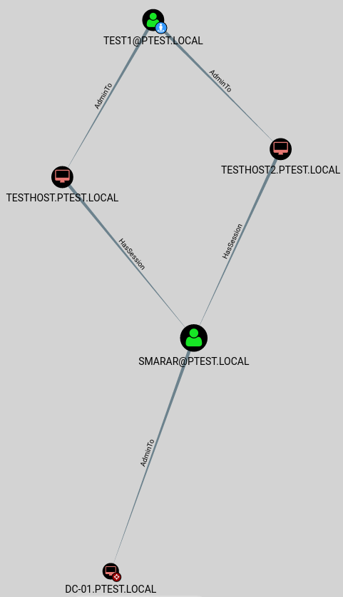

BloodHound applied
The following example is a simple use-case for BloodHound in which we use a theoretically compromised user as a start point; identifying the strategic lateral movements required to help us pivot through the network. Our target is the Domain Administrator account. We’ve selected a compromised account as the start point and the Domain Administrator account as our target node.

1. In the example above we have compromised the user TEST1@PTEST.LOCAL after acquiring valid user credentials via Responder or through an exploit.
2. This user has administrative access to both TESTHOST.PTEST.local and TESTHOST2.PTEST.local indicated by the “AdminTo” relationships.
3. Theoretically, we can use the MSF module “psexec_psh” to gain an active session on either TESTHOST.PTEST.local or TESTHOST2.PTEST.local.
4. BloodHound indicates both machines have an active session with the user, SMARAR@PTEST.local.
5. With the active session on TESTHOST.PTEST.LOCAL, we can enumerate processes and the owner of each process. We do this to locate a process owned by the identified user with the active sessions. If we find a process for one of the users, we can then steal the token from that process “stealtoken PID” (ex. "stealtoken 694"). By stealing this token, we can impersonate the selected user.
Alternatively, we can dump clear text passwords using MimiKatz or dump SAM hashes for pass the hash. Mimikatz is often blocked by AV or application whitelisting software. To circumvent this issue, we can utilize LazyKatz. Lazykatz was developed to dump clear-text credentials from remote targets protected with AV or application whitelisting software.
6. Analyzing the attack path, we can see our target user has administrative access to DC-01.PTEST.LOCAL, which is our target.
If we wish to verify this, we can use “ls \DC-01\C$\”. This command lists the C$ directory and can only be done with valid access”.
With the user having administrative access to this machine, we can use this user for our attack path.
7. BloodHound indicates SMARAR@PTEST.LOCAL has a session with DC-01.PTEST.LOCAL. We identify this by the hassession relationship between the user and the identified machine.
8. Using SMARAR@PTEST.LOCAL, we can psexec_psh into DC-01.PTEST.LOCAL. Once we have established a session on the system, we again have multiple options to compromise the administrator account and achieve our goal. Using either Mimikatz, Lazykatz, or stealing a token we can gain access to the user ADMINISTRATOR@PTEST.local. Once we’ve completed this step, we have successfully compromised the Domain Administrator account.